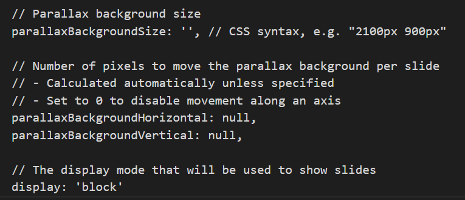

To create more slides, create <section> tag under <div> tag with "slides" class. You can use regular html to create your slides
example of inserting an image into the slide using regular html

Slide 3 is Horizontal slide which it means slide 3 <section> tag is not nested under any other <section>. Slide 4 will explain Vertical slides.
Slide 4 has Vertical slides, and slide 4 is the root of these slides. To create vertical slide, you need to create <section> inside another <section> tag.
Vertical Slides, you can click "Esc" to see your slides. The first <section> is the root.
You can use markdown language to create slides. To use markdown language, you need to do the following
You have to use the correct tags
You have to use the right dependencies too. The following picture shows how to do so.
All of the Configuration are set to default



Using <iframe> tag
Using <code-editor> tag